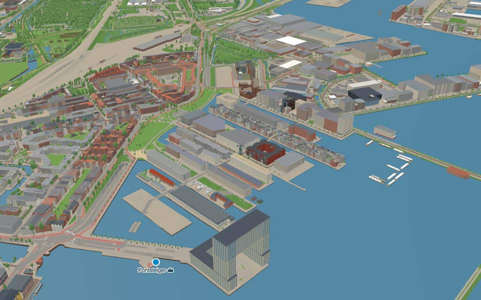
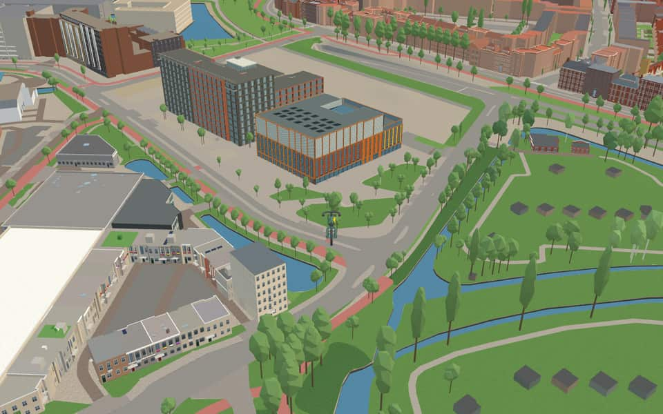
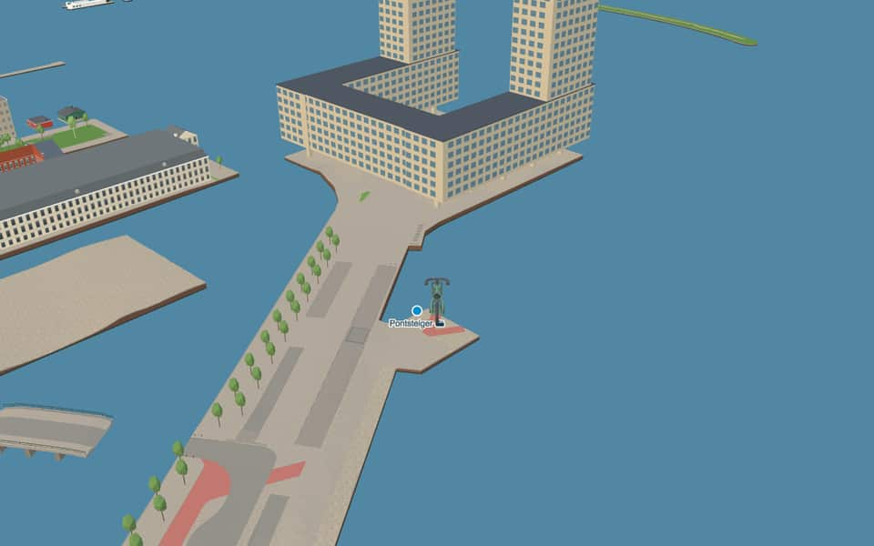
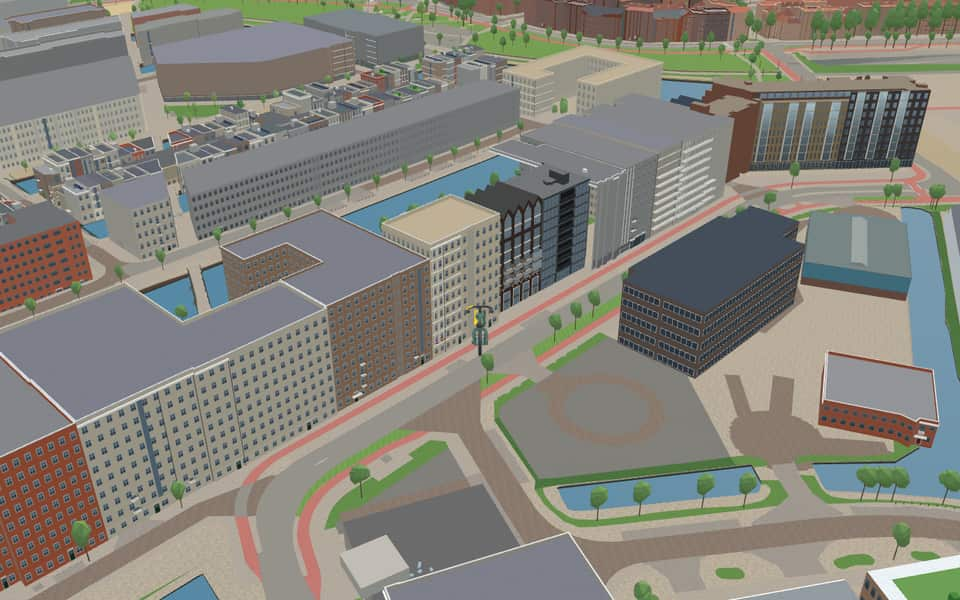

Quarter · Amsterdam
Houthaven
Houthaven is a neighbourhood of Amsterdam, Netherlands situated in the West borough. Literally meaning "lumber port", Houthaven is a port situated along the IJ in Amsterdam's western port. It is bordered by a dam in the IJ river to the north and the Spaarndammerbuurt in the south. en.wikipedia.org
The name. Houthaven means 'timber port': it was dug in 1876 to tranship and store timber. en.wikipedia.org


In the game
Frames from a ride through Houthaven.




6 more photos of Houthaven

.jpg){kind=link}


Built here
Buildings modelled one by one for the ride.
Het 4e Gymnasium
Pontsteiger
- No picture yet
Domūs Houthaven — Haparandaweg 8–338
Haparandaweg 870-900
- No picture yet
Het Pakhuis, Haparandaweg 902-950
- No picture yet
Houthavenkade 26, Amsterdam-West (Houthavens)
2018 courtyard block of apartments on the Houthavenkade, an eight-storey canal front of orange and dark brick with glass balcony columns over a glazed ground, a set-back glazed top floor and lower brick ranges on the south and west
- No picture yet
Revaleiland 437, Amsterdam-Centrum (Java-eiland / Revaleiland)
2020 apartment block round a courtyard, five storeys of red brick with cream-framed windows, stacked glass-railed balconies in recesses, a dark brick plinth and a set-back top floor with slot windows
Did you know
Trivia the ride can show you here.
- A former timber port on the IJ, now redeveloped as a residential neighbourhood. Wikipedia
- Dug in 1876, it was Amsterdam’s first harbour excavated rather than formed from existing water. Wikipedia
- HouthavenHouthaven was the first Amsterdam port dug from scratch, unlike earlier ones using existing waters. en.wikipedia.org
- HouthavenParts of Houthaven were filled with sand in 1945 as lumber transport shifted to road vehicles. en.wikipedia.org
- HouthavenThe harbour consists of four distinct parts arranged from east to west. en.wikipedia.org
- Oude HouthavenOude Houthaven was excavated in 1876 alongside the North Sea Canal. en.wikipedia.org
- HaparandadamThe road on the dam connects to the south side of Haparandaweg, a name established in 1940. nl.wikipedia.org
- HaparandadamHaparandadam honors Haparanda, a Swedish port on the Gulf of Bothnia bordering Finland. nl.wikipedia.org
Names on the map
Where the canal, bridge and street names come from.
Canals and water
- GevlewaterThe names of the canals refer to the names of the bridges that cross them.
- HouthavenBuilt in 1873 and enlarged in 1878, for goods shipped through the port of Amsterdam (houthaven: timber harbour).
- HouthavengrachtThe names of the canals refer to the names of the bridges that cross them.
- KolberggrachtThe names of the canals refer to the names of the bridges that cross them.
- KoningsbergengrachtThe names of the canals refer to the names of the bridges that cross them.
- LübeckgrachtThe names of the canals refer to the names of the bridges that cross them.
- Oude HouthavenDug in 1876 for handling and storing timber.
- PernaugrachtThe names of the canals refer to the names of the bridges that cross them.
- StralsundgrachtThe names of the canals refer to the names of the bridges that cross them.
- WismargrachtThe names of the canals refer to the names of the bridges that cross them.
Bridges
- GevlebrugThe Swedish port of Gävle on the Gulf of Bothnia, an important timber export port and now one of Sweden's largest oil ports.Bridge 2430: a bridge for road traffic, dated 2019 in the city's bridge register.
- HelsingforsbrugHelsingfors is the Swedish name for Helsinki, the capital of Finland. The names in the Houthavens are named after places the Netherlands traded with a great deal in the seventeenth and eighteenth centuries.Bridge 2421: a reinforced concrete bridge for road traffic.
- KolbergbrugKolberg was the German name for the Polish Baltic port of Kołobrzeg. The names in the Houthavens are taken from places the Netherlands traded with a great deal in the seventeenth and eighteenth centuries.
- KoningsbergenbrugKoningsbergen was the Dutch name for Königsberg, now the Russian Baltic exclave of Kaliningrad. The names in the Houthavens are taken from places the Netherlands traded with a great deal in the seventeenth and eighteenth centuries.
- KronstadtbrugKronstadt is a Russian port on the Gulf of Finland near Saint Petersburg. The names in the Houthavens are taken from places the Netherlands traded with a great deal in the seventeenth and eighteenth centuries.
- LübeckbrugLübeck is a Hanseatic city in the German state of Schleswig-Holstein. The names in the Houthavens are taken from places the Netherlands traded with a great deal in the seventeenth and eighteenth centuries.Bridge 2429: a bridge for road traffic.
- PernaubrugPernau was the German name for the Estonian port of Pärnu on the Gulf of Riga. The names in the Houthavens are taken from places the Netherlands traded with a great deal in the seventeenth and eighteenth centuries.
- RostockbrugRostock is a port in north-eastern Germany. The names in the Houthavens are taken from places the Netherlands traded with a great deal in the seventeenth and eighteenth centuries.
- StralsundbrugStralsund is a German port by the island of Rügen on the Baltic. The names in the Houthavens are taken from places the Netherlands traded with a great deal in the seventeenth and eighteenth centuries.
- WismarbrugWismar is a Baltic port in north-eastern Germany, near Rostock. The names in the Houthavens are taken from places the Netherlands traded with a great deal in the seventeenth and eighteenth centuries.
Streets
- ArchangelkadeThe Russian port city on the White Sea (Arctic Ocean), a port that exports timber. Amsterdam merchants were already visiting the city regularly around 1600.
- ArchangelwegThe Russian port city on the White Sea (Arctic Ocean), a port that exports timber. Amsterdam merchants were already visiting the city regularly around 1600.
- GevlebrugThe Swedish port of Gävle on the Gulf of Bothnia, an important timber export port and now one of Sweden's largest oil ports.
- HaparandadamA Swedish port on the Gulf of Bothnia, a timber port.
- HaparandawegA Swedish port on the Gulf of Bothnia, a timber port.
- HelsingforsbrugHelsingfors is the Swedish name for Helsinki, the capital of Finland. The names in the Houthavens are named after places the Netherlands traded with a great deal in the seventeenth and eighteenth centuries.
- HouthavenkadeGoods that were and are shipped through the port of Amsterdam.
- HouthavenwegGoods that were and are shipped through the port of Amsterdam.
- Karlskrona-eilandA Swedish port on the Baltic from which much potash, timber and iron used to be shipped to Amsterdam.
- KolbergbrugKolberg was the German name for the Polish Baltic port of Kołobrzeg. The names in the Houthavens are taken from places the Netherlands traded with a great deal in the seventeenth and eighteenth centuries.
- KoningsbergenbrugKoningsbergen was the Dutch name for Königsberg, now the Russian Baltic exclave of Kaliningrad. The names in the Houthavens are taken from places the Netherlands traded with a great deal in the seventeenth and eighteenth centuries.
- KronstadtbrugKronstadt is a Russian port on the Gulf of Finland near Saint Petersburg. The names in the Houthavens are taken from places the Netherlands traded with a great deal in the seventeenth and eighteenth centuries.
13 more streets with a story
- Libau-eilandThe old German name for Liepāja, now a Latvian port, from which much timber used to be shipped to Amsterdam.
- LübeckbrugLübeck is a Hanseatic city in the German state of Schleswig-Holstein. The names in the Houthavens are taken from places the Netherlands traded with a great deal in the seventeenth and eighteenth centuries.
- MemeleilandAn old Prussian town, called Klaipėda since 1945 and part of Lithuania. In the second half of the eighteenth century it was important for supplying timber to Amsterdam.
- Narva-eilandA town in Estonia on the Russian border, which mattered to Amsterdam as a historical timber-exporting port.
- PernaubrugPernau was the German name for the Estonian port of Pärnu on the Gulf of Riga. The names in the Houthavens are taken from places the Netherlands traded with a great deal in the seventeenth and eighteenth centuries.
- PontsteigerThe departure point of the Distelweg and Houthaven ferries.
- RevaleilandNow Tallinn, the capital of Estonia. In the seventeenth century Amsterdam was the largest buyer of its rye, grain and timber.
- RigakadeThe seaport and capital of Latvia.
- RostockbrugRostock is a port in north-eastern Germany. The names in the Houthavens are taken from places the Netherlands traded with a great deal in the seventeenth and eighteenth centuries.
- StettineilandAn important historical Swedish and Prussian port for exporting timber. The city is now Polish and called Szczecin. The original council decision spelled it 'Stennin'; this was later corrected.
- StralsundbrugStralsund is a German port by the island of Rügen on the Baltic. The names in the Houthavens are taken from places the Netherlands traded with a great deal in the seventeenth and eighteenth centuries.
- WiborgeilandA Baltic port (Vyborg), Swedish, Russian, Finnish and finally Russian again, which was important for the Amsterdam timber trade.
- WismarbrugWismar is a Baltic port in north-eastern Germany, near Rostock. The names in the Houthavens are taken from places the Netherlands traded with a great deal in the seventeenth and eighteenth centuries.
1 other street without a recorded story
Narav-eiland